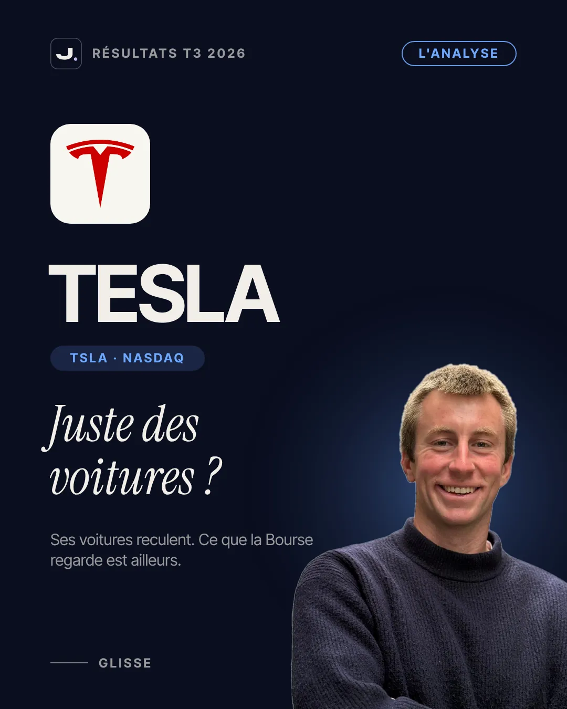
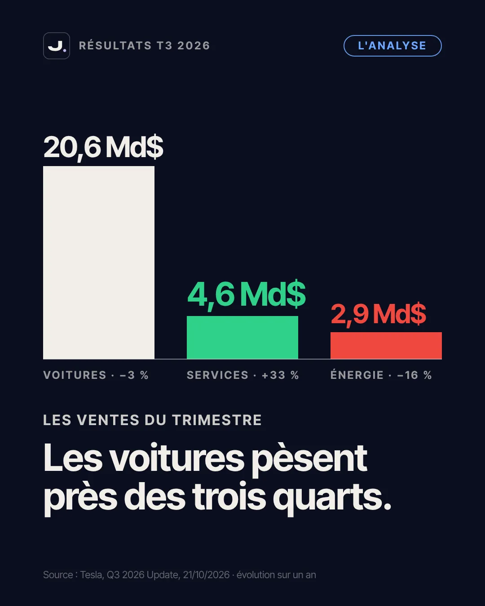
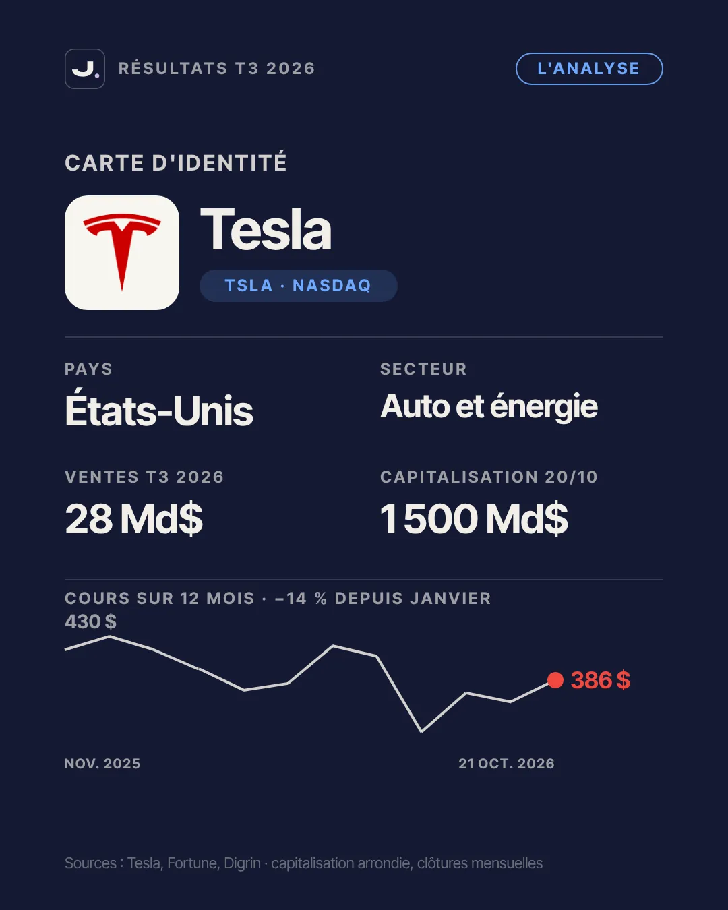
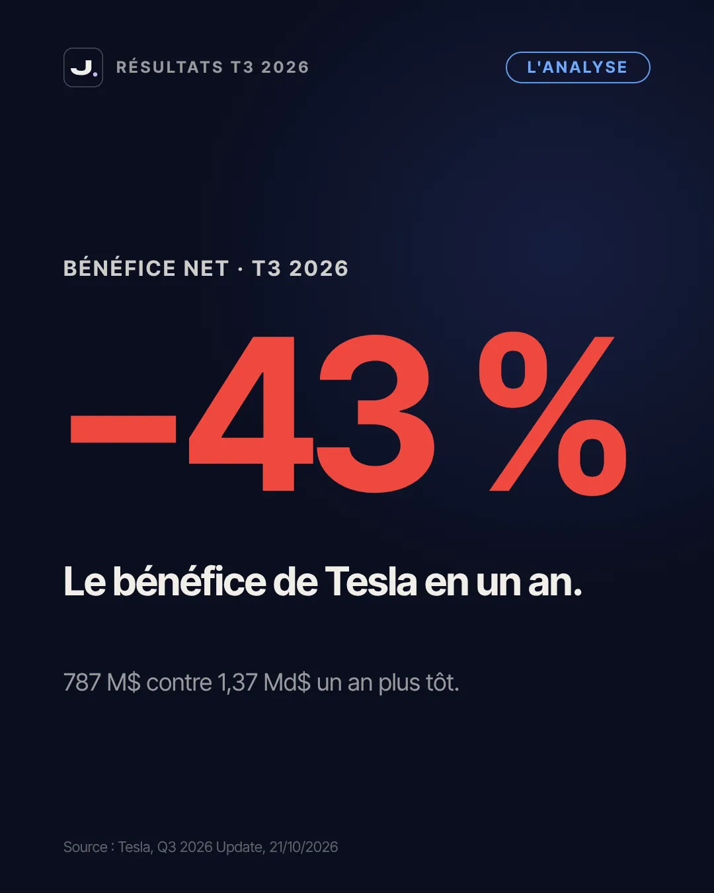
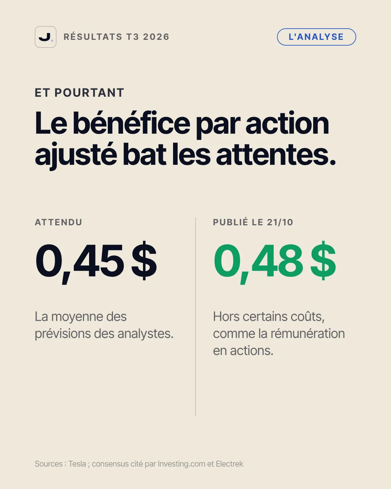
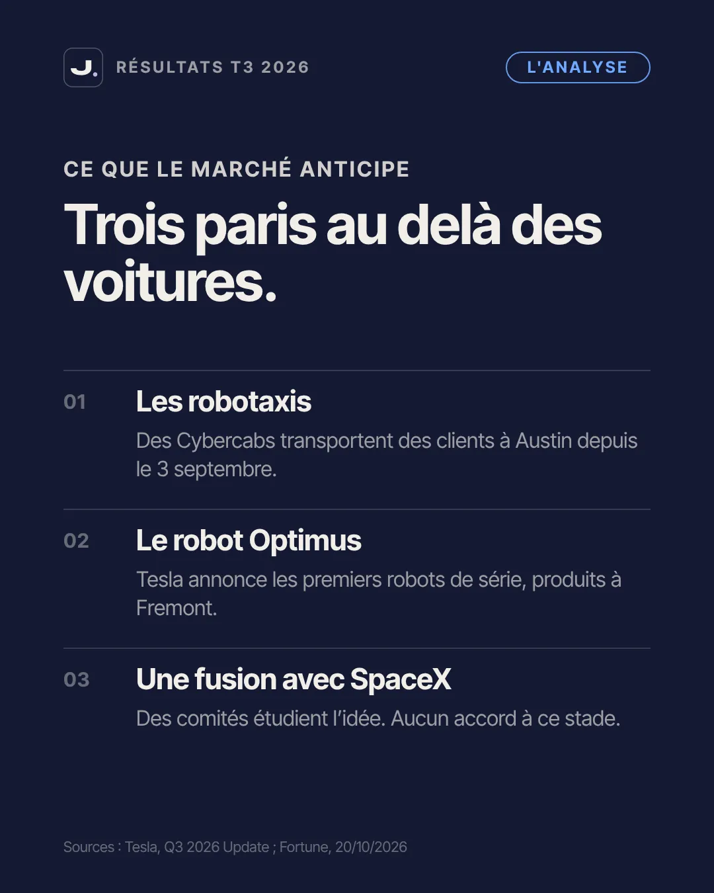
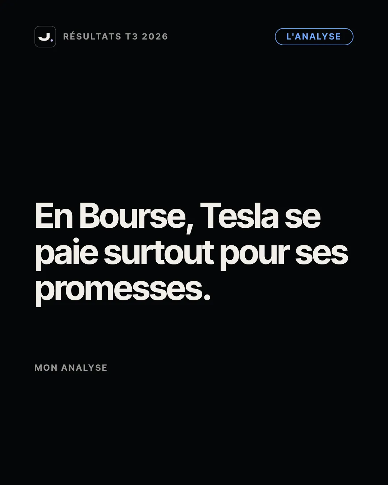
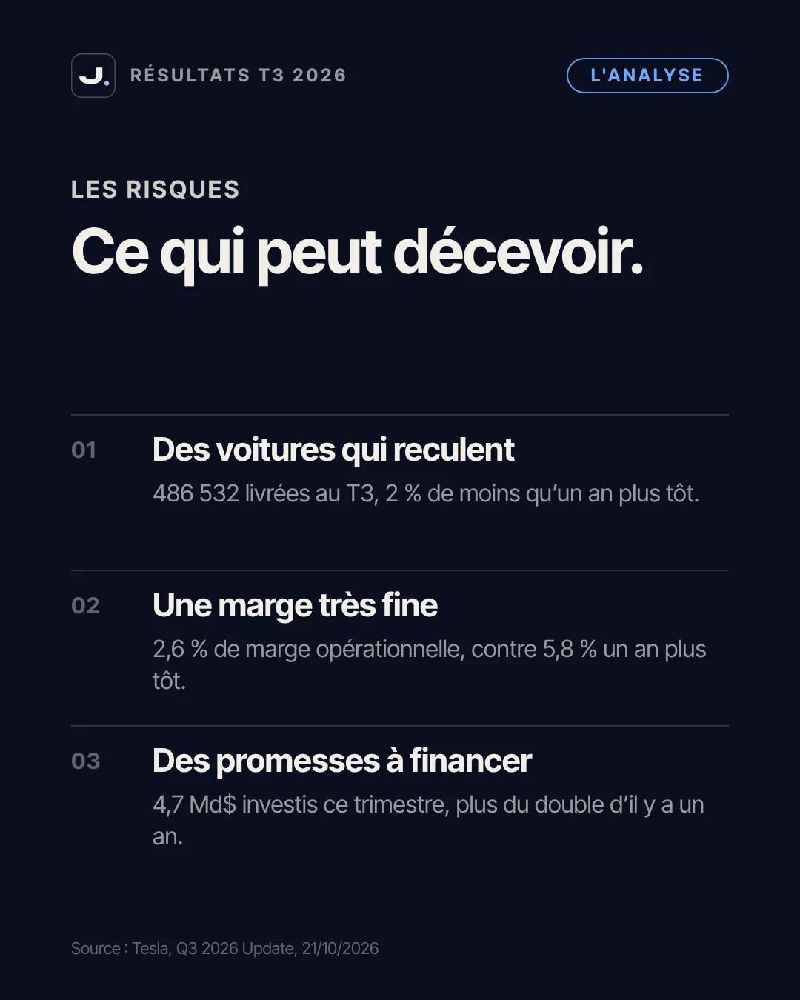
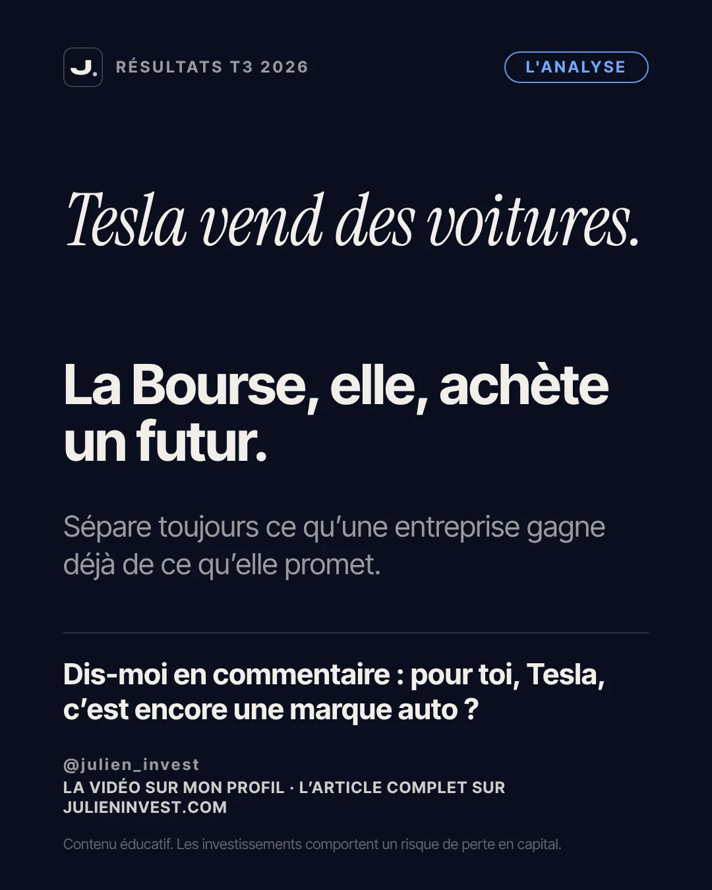

Cet article approfondit mon carrousel de la semaine. Si tu n'as jamais analysé une entreprise, commence par mon guide pour débuter en investissement, puis reviens ici.

- Ce que fait vraiment Tesla
- Les chiffres clés du troisième trimestre 2026
- Bénéfice net en chute, et pourtant les attentes battues : comment c'est possible
- Ce que le marché anticipe : trois paris au delà des voitures
- Le cours de l'action sur douze mois
- Les risques à garder en tête
- Méthode : lire les résultats d'une entreprise en cinq étapes
- Les erreurs fréquentes face à une action comme Tesla
- Les limites de cette analyse
- La version vidéo
- Le carrousel en images
- Questions fréquentes
Ce que fait vraiment Tesla
Pour la plupart des gens, Tesla, c'est une marque de voitures électriques. C'est vrai, mais incomplet. L'entreprise américaine, cotée sur le Nasdaq sous le code TSLA, gagne de l'argent de trois façons différentes, et elle le détaille dans chaque rapport trimestriel.
- Les voitures : la vente des Model 3, Model Y et des autres modèles, plus quelques revenus annexes comme les crédits réglementaires vendus à d'autres constructeurs.
- L'énergie : les grandes batteries stationnaires (Megapack) et domestiques (Powerwall), ainsi que les panneaux solaires.
- Les services et autres : la recharge sur les Superchargeurs, l'entretien, l'assurance, la vente de voitures d'occasion et de pièces.
À côté de ces activités qui rapportent déjà de l'argent, Tesla développe des projets qui ne pèsent presque rien dans ses ventes aujourd'hui mais énormément dans l'esprit des investisseurs : les robotaxis, le robot humanoïde Optimus et le logiciel de conduite autonome. C'est toute la question de ce trimestre : faut il regarder Tesla comme un constructeur automobile, ou comme autre chose ?
Si tu débutes dans l'analyse d'une entreprise, mon article sur l'analyse fondamentale explique les grands indicateurs que j'utilise ici.
Les chiffres clés du troisième trimestre 2026
Tesla a publié ses résultats le 21 octobre 2026, après la clôture de Wall Street, dans un document intitulé « Q3 2026 Update ». Voici l'essentiel, comparé au même trimestre de 2025.
- Chiffre d'affaires : 28 milliards de dollars (28 046 millions), quasiment stable par rapport aux 28 095 millions d'un an plus tôt.
- Voitures : 20,6 milliards de dollars, en baisse de 3 %. C'est près des trois quarts des ventes totales.
- Services et autres : 4,6 milliards de dollars, en hausse de 33 %. C'est l'activité qui progresse le plus vite.
- Énergie : 2,9 milliards de dollars, en baisse de 16 %.
- Bénéfice net : 787 millions de dollars, contre 1,37 milliard un an plus tôt, soit une baisse de 43 %.
- Livraisons : 486 532 voitures livrées, 2 % de moins qu'au troisième trimestre 2025.
Le résumé tient en une phrase : le chiffre d'affaires ne bouge pas, mais le bénéfice fond. Quand les ventes stagnent et que le bénéfice recule autant, c'est que les coûts ont augmenté plus vite que l'activité. On le voit dans la marge opérationnelle, qui mesure ce qu'il reste à l'entreprise sur chaque dollar vendu une fois payés la fabrication, la recherche et les frais de structure : elle passe de 5,8 % à 2,6 % en un an.

Bénéfice net en chute, et pourtant les attentes battues : comment c'est possible
C'est le point qui déroute le plus les débutants. Le bénéfice net de Tesla s'effondre de 43 %, et pourtant les titres de la presse financière parlent de résultats « meilleurs que prévu ». Il n'y a pas de contradiction : les analystes ne comparent pas les mêmes chiffres.
Le bénéfice net comptable
C'est le bénéfice calculé selon les normes comptables américaines (GAAP). Il intègre tout, y compris des éléments qui ne reflètent pas l'activité courante : la rémunération des salariés versée en actions, ou les variations de valeur de certains placements. Tesla détient par exemple une participation dans SpaceX, dont la valeur comptable a reculé ce trimestre.
Le bénéfice par action ajusté
Les entreprises publient aussi un bénéfice « ajusté » (non GAAP), qui retire ces éléments pour montrer la performance de l'activité elle même. Divisé par le nombre d'actions, il donne le bénéfice par action ajusté. Pour Tesla, il atteint 0,48 dollar ce trimestre, alors que la moyenne des analystes attendait 0,45 dollar. C'est ce chiffre que le marché compare au consensus, et c'est pour cela qu'on parle de résultats au dessus des attentes.
La leçon est utile pour toutes les entreprises que tu regarderas : un bénéfice ajusté est un outil de lecture, pas une vérité. Il est légitime de retirer un élément vraiment exceptionnel, mais une rémunération en actions versée chaque année est un coût bien réel pour l'actionnaire. Regarde toujours les deux chiffres côte à côte, et demande toi pourquoi l'écart existe.
Ce que le marché anticipe : trois paris au delà des voitures
Tesla vaut près de 1 500 milliards de dollars en Bourse (au 20 octobre 2026). Pour un constructeur dont les ventes de voitures reculent et dont le bénéfice trimestriel est de 787 millions, ce prix ne s'explique pas par l'activité actuelle. Il s'explique par ce que les investisseurs espèrent. Selon moi, trois paris dominent.
1. Les robotaxis
Tesla indique avoir commencé à transporter des clients en Cybercab, son véhicule conçu pour rouler sans conducteur, à Austin, au Texas, depuis le 3 septembre 2026. L'idée est de vendre des trajets plutôt que des voitures, un modèle qui pourrait, s'il fonctionne à grande échelle, rapporter de l'argent à chaque kilomètre parcouru.
2. Le robot Optimus
Dans son rapport, Tesla annonce avoir lancé la production d'Optimus sur des lignes dédiées à Fremont, en Californie, et présente ces machines comme ses premiers robots de qualité série. Le projet ne génère pas encore de ventes significatives : c'est un pari sur un marché qui n'existe pas encore vraiment.
3. Une fusion avec SpaceX
Le 20 octobre, Elon Musk a confirmé que Tesla et SpaceX, l'autre entreprise qu'il dirige, étudient un rapprochement. Des comités spéciaux composés d'administrateurs indépendants ont été créés des deux côtés. Musk lui même a précisé que présenter cette fusion comme une certitude serait exagéré, et aucun accord n'a été trouvé. Côté Tesla, une telle opération devrait obtenir le soutien d'une majorité des actions en circulation.
Ces trois paris ont un point commun : ils ne figurent presque pas dans les chiffres d'aujourd'hui. Quand tu achètes une action comme Tesla, tu paies donc surtout un scénario d'avenir, avec la part d'incertitude que cela implique.
Le cours de l'action sur douze mois
À la clôture du 21 octobre 2026, l'action Tesla valait 386,47 dollars. Elle avait terminé l'année 2025 à 449,72 dollars : elle recule donc d'environ 14 % depuis le 1er janvier. Sur douze mois, le parcours a été agité, avec un point bas mensuel à 311 dollars fin juillet, puis une remontée.
Ces variations rappellent une chose importante : une action valorisée surtout sur ses promesses réagit fortement aux nouvelles qui renforcent ou affaiblissent ces promesses. Une annonce sur les robotaxis, une déclaration sur la fusion ou un retard de production peuvent faire bouger le cours bien plus que les chiffres du trimestre. Si tu veux comprendre comment ces mouvements jouent sur tes émotions, lis mon article sur la psychologie de l'investisseur.
Les risques à garder en tête
Une analyse honnête doit regarder ce qui peut mal tourner. Voici les trois risques qui ressortent directement des chiffres publiés.
Des ventes de voitures qui reculent
Les livraisons baissent de 2 % sur un an et les revenus automobiles de 3 %. Or les voitures représentent encore près des trois quarts du chiffre d'affaires. Tant que les nouveaux projets ne rapportent pas, c'est cette activité qui finance tout le reste.
Une marge très fine
Avec une marge opérationnelle de 2,6 %, Tesla garde peu d'argent sur chaque dollar vendu. Une baisse de prix, une hausse du coût des matières premières ou un ralentissement de la demande pourraient suffire à effacer ce bénéfice d'exploitation.
Des promesses coûteuses à financer
Tesla a investi 4,7 milliards de dollars ce trimestre dans ses usines et ses équipements, plus du double des 2,2 milliards d'un an plus tôt. Ces dépenses préparent les robotaxis et Optimus, mais elles pèsent sur la trésorerie disponible. Si les projets prennent du retard, l'entreprise aura dépensé beaucoup sans retour rapide.
Il faut ajouter un risque plus difficile à chiffrer : la dépendance à une seule personne. Elon Musk dirige Tesla et SpaceX, et la fusion envisagée crée une situation où il ne peut pas participer aux discussions. C'est une source d'incertitude pour les actionnaires des deux sociétés.
Méthode : lire les résultats d'une entreprise en cinq étapes
Ce que tu viens de lire sur Tesla, tu peux le refaire pour n'importe quelle entreprise cotée. Voici la méthode que j'utilise.
Étape 1 : trouve le document officiel
Chaque entreprise publie ses résultats sur son site, rubrique investisseurs. Aux États-Unis, ils sont aussi déposés auprès de la SEC. Pars toujours de ce document plutôt que d'un titre de presse.
Étape 2 : regarde le chiffre d'affaires, puis sa répartition
Le total ne suffit pas. Chez Tesla, un chiffre stable cache des voitures en baisse, des services en forte hausse et une énergie en recul.
Étape 3 : compare le bénéfice et la marge à l'an dernier
Compare toujours un trimestre au même trimestre de l'année précédente, pour éviter les effets de saison.
Étape 4 : distingue bénéfice comptable et bénéfice ajusté
Note les deux, et cherche ce qui explique l'écart. C'est souvent là que se cache l'information la plus intéressante.
Étape 5 : sépare ce qui rapporte de ce qui est promis
Liste les activités qui génèrent déjà des ventes, puis les projets. Demande toi quelle part du prix de l'action repose sur chacun. Plus la part des promesses est grande, plus le cours sera sensible aux nouvelles.
Les erreurs fréquentes face à une action comme Tesla
- Confondre la marque et l'action. Aimer les voitures Tesla ne dit rien du prix de l'action. Une excellente entreprise peut être une action trop chère, et inversement.
- Ne lire que le titre « résultats meilleurs que prévu ». Battre les attentes sur un bénéfice ajusté n'empêche pas un bénéfice net en forte baisse.
- Prendre une promesse pour un fait. Une fusion à l'étude n'est pas une fusion annoncée, et un robot en début de production n'est pas encore un produit rentable.
- Concentrer son épargne sur une seule action. Une action très médiatisée peut perdre une grande partie de sa valeur en quelques mois. Si tu investis via un ETF large, tu détiens déjà une petite part de Tesla, mêlée à des centaines d'autres entreprises. Mon article sur le stock picking détaille les pièges de la sélection d'actions individuelles.
Les limites de cette analyse
Cette analyse repose sur les chiffres publiés par Tesla le 21 octobre 2026, avant le dépôt du rapport trimestriel complet (10 Q), qui peut apporter des précisions. Les attentes des analystes sont des moyennes publiées par la presse financière, et les sources ne donnent pas toutes exactement le même chiffre. Le cours de l'action et la capitalisation changent chaque jour : vérifie les avant de t'en servir.
Enfin, la conclusion de ce carrousel, selon laquelle le prix de Tesla repose surtout sur ses projets, est mon analyse. D'autres investisseurs estiment que l'activité automobile et énergétique justifie une part plus grande de la valorisation. C'est précisément ce débat qui rend l'action aussi volatile. Rien ici ne constitue une recommandation d'achat ou de vente.
La version vidéo
Les chiffres clés de cette analyse en moins de quarante secondes, tels que je les ai publiés sur Instagram et TikTok.
Retrouve aussi la vidéo sur Instagram et TikTok.
Le carrousel en images
Le résumé de cet article en 9 slides, à enregistrer ou à partager.







Un nouveau sujet chaque lundi, vendredi et dimanche : suis la série sur Instagram · TikTok · YouTube.
Questions fréquentes
Pourquoi le bénéfice de Tesla a t il baissé au troisième trimestre 2026 ?
Le chiffre d'affaires est resté stable à 28 milliards de dollars, mais les coûts ont progressé. La marge opérationnelle est passée de 5,8 % à 2,6 % en un an, et le bénéfice net a reculé de 43 %, à 787 millions de dollars.
Qu'est ce que le bénéfice par action ajusté ?
C'est le bénéfice par action calculé en retirant certains éléments, comme la rémunération versée en actions ou la variation de valeur de placements. Chez Tesla, il atteint 0,48 dollar ce trimestre, contre 0,45 dollar attendu par les analystes.
Tesla va t elle fusionner avec SpaceX ?
Rien n'est décidé. Le 20 octobre 2026, Elon Musk a confirmé que les deux entreprises étudient un rapprochement via des comités spéciaux, sans aucun accord à ce stade. Côté Tesla, une majorité des actions en circulation devrait l'approuver.
Faut il acheter l'action Tesla ?
Je ne donne pas de recommandation d'achat ou de vente. L'objectif de cet article est de t'aider à comprendre ce que tu achètes : une entreprise dont l'activité actuelle progresse peu et dont le prix repose largement sur des projets d'avenir.
Tu veux la méthode complète, pas juste cet article ?
Reçois mon ebook par email : les erreurs qui coûtent le plus cher quand on débute, et la marche à suivre pour les éviter.
- Au troisième trimestre 2026, le chiffre d'affaires de Tesla est stable à 28 milliards de dollars, mais son bénéfice net recule de 43 %.
- Les voitures pèsent encore près des trois quarts des ventes et reculent de 3 %, tandis que les services progressent de 33 %.
- Le bénéfice par action ajusté (0,48 dollar) bat les attentes (0,45 dollar) : ne confonds pas bénéfice ajusté et bénéfice net.
- Le marché mise sur les robotaxis, Optimus et une éventuelle fusion avec SpaceX, des projets qui ne pèsent presque rien dans les ventes actuelles.
- Méthode à retenir : sépare toujours ce qu'une entreprise gagne déjà de ce qu'elle promet.
Sources
- Tesla, Q3 2026 Update (8-K déposé à la SEC le 21/10/2026)
- Tesla, production et livraisons du T3 2026 (8-K, 02/10/2026)
- Electrek, résultats T3 2026 de Tesla et consensus (21/10/2026)
- Investing.com, transcription de la conférence de résultats (21/10/2026)
- Fortune, Tesla et SpaceX étudient une fusion (20/10/2026)
- Forbes, chiffre d'affaires et cours de Tesla (21/10/2026)
Contenu éducatif, pas un conseil en investissement. Investir comporte un risque de perte en capital ; les performances passées ne préjugent pas des performances futures.
Apprends à analyser une entreprise
La formation Julien Invest t'apprend à lire des résultats, à construire un portefeuille diversifié et à garder la tête froide.
Découvrir la formation